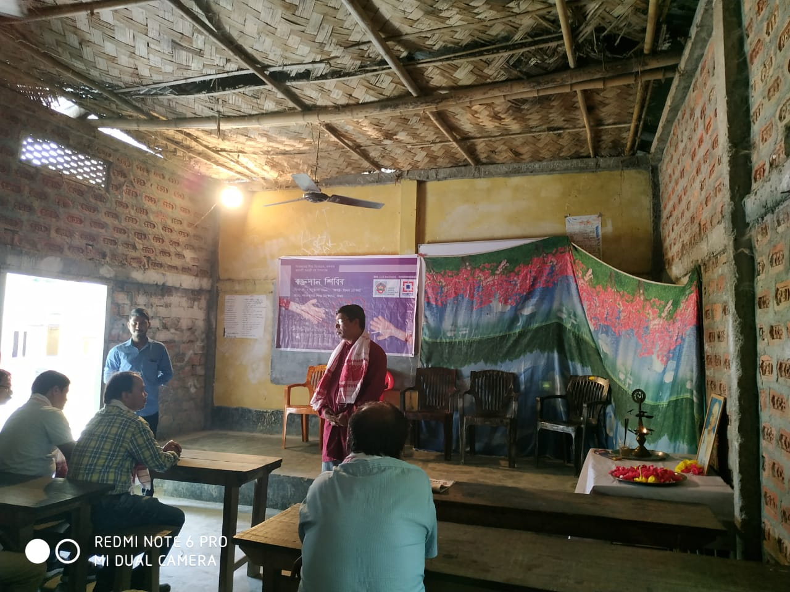

I am currently serving as a president of “Praktan Chatra Bharati,” an alumni association of the Sankardev Sishu Niketan, Karara, for the period October 2018 – September 2020.
I am also one of the founding members and founding secretary of the same organization. As a head of the organization, working closely with the school committee, my prime focus
is to ensure the multilateral growth of the school students by enhancing their participation in various extracurricular activities. We have organized several social activities,
including science exhibition and quiz competitions (for school students), felicitation of outstanding students for their performance in board examinations, to name a few. By
organizing blood donation drives, plantation drives, we also ensure the betterment of the communities in the nearby areas of the school. In the future, we are planning to extend
or focus areas to some more socially essential issues such as medical camp for rural areas, coaching sessions organized for economically underprivileged students, etc.
